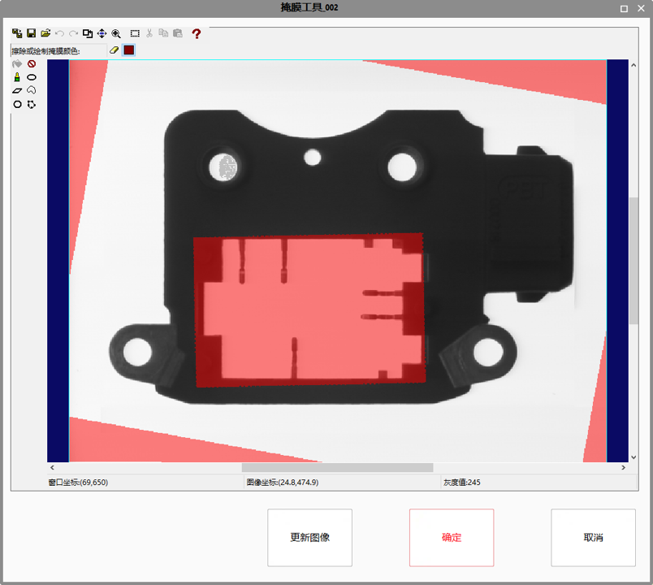

Chức năng mặt nạ: Che khuất các phần không quan tâm trong ảnh đầu vào;
Chức năng tô màu: Có thể tô các vùng mặt nạ theo giá trị xám hoặc giá trị RGB đã thiết lập;
| Phân loại | Tên tham số | Mô tả tham số |
|---|---|---|
| Thuộc tính | Loại ảnh | Các loại có thể chọn: ảnh xám hoặc ảnh màu |
| Xuất ảnh nhị phân | Chọn “Có” để xuất ảnh dưới dạng nhị phân, vùng mặt nạ sẽ là màu đen, phần còn lại màu trắng | |
| Có tô vùng mặt nạ hay không | Chọn “Có” để tô vùng mặt nạ bằng giá trị xám hoặc giá trị màu, thay đổi màu của vùng mặt nạ | |
| Giá trị tô vùng mặt nạ | Khi chọn ảnh xám, đây là giá trị xám để tô | |
| Giá trị tô kênh đỏ vùng mặt nạ | Khi chọn ảnh màu, đây là giá trị kênh đỏ để tô | |
| Giá trị tô kênh xanh lá vùng mặt nạ | Khi chọn ảnh màu, đây là giá trị kênh xanh lá để tô | |
| Giá trị tô kênh xanh dương vùng mặt nạ | Khi chọn ảnh màu, đây là giá trị kênh xanh dương để tô | |
| Cửa sổ hình ảnh | Ảnh đầu vào | Ảnh cần áp dụng mặt nạ |
| Ảnh đầu vào RGB | Ảnh màu cần áp dụng mặt nạ | |
| Dữ liệu chuỗi | Ảnh đầu vào | Ảnh cần áp dụng mặt nạ |
| Ảnh đầu vào RGB | Ảnh màu cần áp dụng mặt nạ | |
| Biến đổi tuyến tính 2D | Biến đổi tuyến tính 2D bao gồm tịnh tiến, xoay, và thu phóng của đối tượng so với mẫu. Vùng mặt nạ sẽ nhận biến đổi tuyến tính 2D để đảm bảo vùng mặt nạ trên ảnh thời gian thực giữ vị trí tương đối cố định. | |
| Giao diện nâng cao | Cập nhật ảnh | Lấy ảnh cần áp dụng mặt nạ |
| Xác nhận | Áp dụng mặt nạ lần này | |
| Hủy | Bỏ mặt nạ lần này, tiếp tục sử dụng mẫu mặt nạ trước đó |
| Phân loại | Tên tham số | Mô tả tham số |
|---|---|---|
| Cửa sổ giám sát | Ảnh đầu ra | Chiều rộng, chiều cao và kích thước điểm ảnh của ảnh đầu ra. |
| Ảnh đầu ra RGB | Chiều rộng, chiều cao và kích thước điểm ảnh của ảnh màu đầu ra. | |
| Kết quả thực thi | Kết quả thực thi của công cụ. | |
| Thời gian thực thi | Thời gian thực thi của công cụ. | |
| Cửa sổ hình ảnh | Ảnh đầu ra | Ảnh kết quả sau khi thực hiện che mặt nạ trên ảnh đầu vào. |
| Ảnh đầu ra RGB | Ảnh màu kết quả sau khi thực hiện che mặt nạ trên ảnh đầu vào màu. | |
| Kết quả thực thi | Hiển thị kết quả thực thi của công cụ: thành công hiển thị “OK”, thất bại hiển thị “NG”, giống tham số kết quả thực thi của cửa sổ giám sát. | |
| Chuỗi dữ liệu | Ảnh đầu ra | Ảnh kết quả sau khi thực hiện che mặt nạ trên ảnh đầu vào. |
| Ảnh đầu ra RGB | Ảnh màu kết quả sau khi thực hiện che mặt nạ trên ảnh đầu vào màu. |
Giao diện thuộc tính nâng cao của công cụ mặt nạ được thể hiện ở Hình 1, chủ yếu gồm phần điều khiển và phần hiển thị.
Phần điều khiển chủ yếu là điều khiển các phần liên quan đến chỉnh sửa ảnh mặt nạ và điều khiển hiển thị ảnh, bao gồm thanh công cụ điều khiển và thanh công cụ vẽ;
Phần hiển thị chủ yếu là hiển thị ảnh tham chiếu và ảnh mặt nạ, cũng như hiển thị vị trí chuột và giá trị điểm ảnh tương ứng trên ảnh tham chiếu, bao gồm vùng hiển thị và thanh trạng thái.

Việc sử dụng giao diện mặt nạ cụ thể có thể tham khảo tài liệu tương ứng với nút dấu hỏi ❓ trên giao diện mặt nạ.
Ảnh mặt nạ nên nhỏ hơn 512MB. Nếu lớn hơn 512MB, cung cấp hai phương án:
Phương án 1: Giảm mẫu ảnh rồi mới hiển thị để vẽ. Sau khi vẽ xong, phóng to ảnh mặt nạ về kích thước ban đầu (vùng vẽ được sẽ tương ứng với vùng mặt nạ), nhưng độ chính xác sẽ thấp hơn một chút (ví dụ: trước đây độ chính xác là 1 pixel, phương án này độ chính xác ~ 2 pixel), và thời gian xử lý sẽ tăng.
Phương án 2: Cắt một phần ảnh, sau đó vẽ mặt nạ cho phần này, rồi dán lại phần này vào ảnh mặt nạ có kích thước bằng ảnh đầu vào.
参见“\Samples\掩膜工具.gvp”。